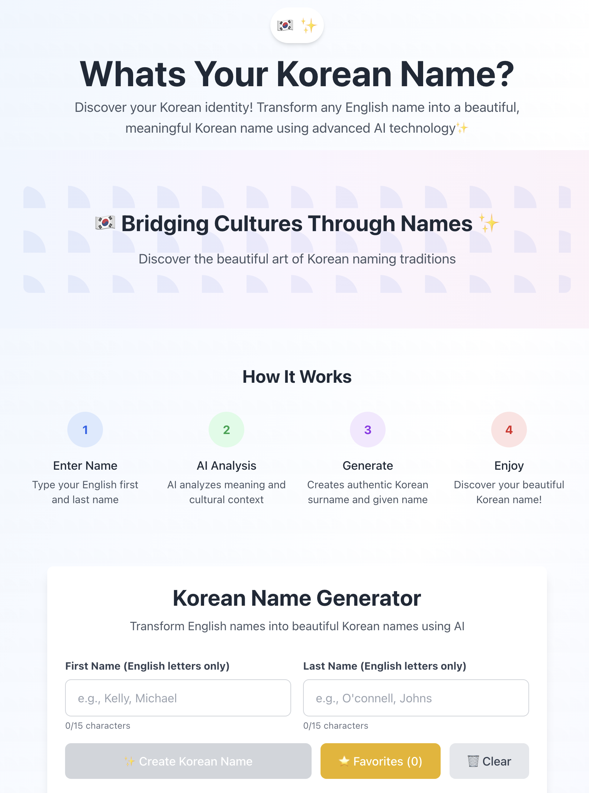
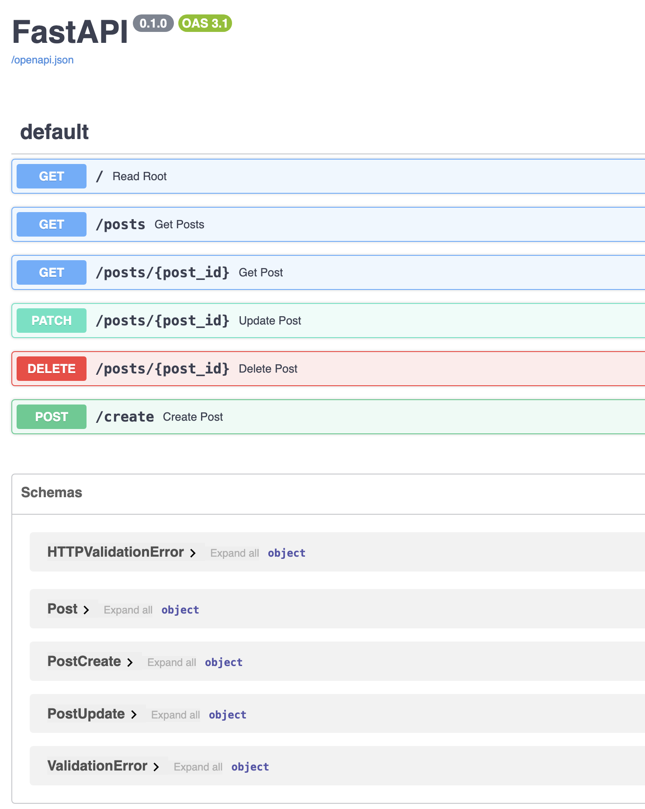
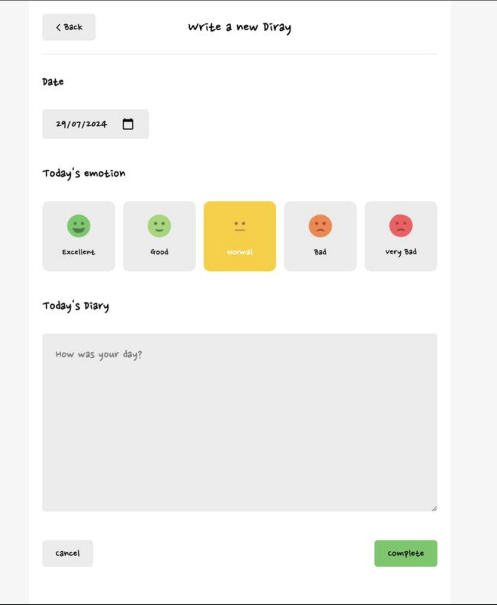
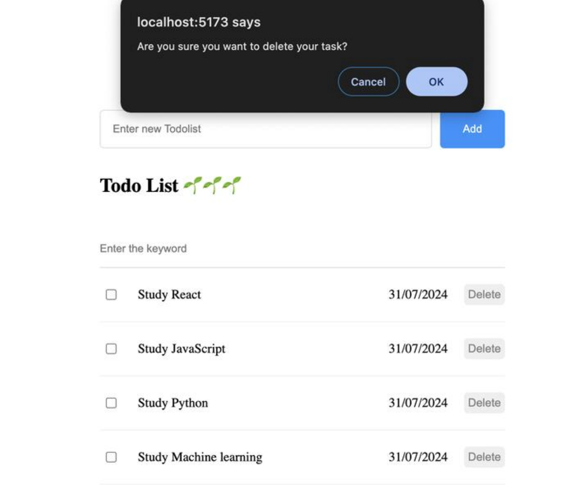
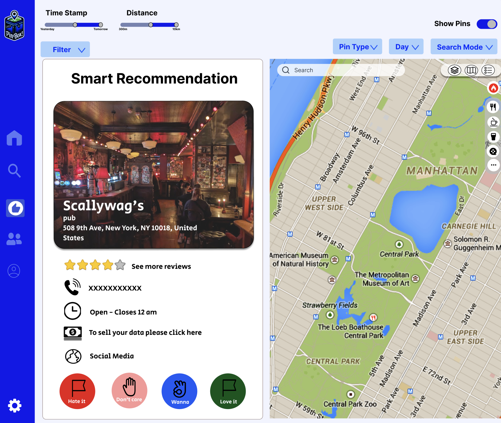
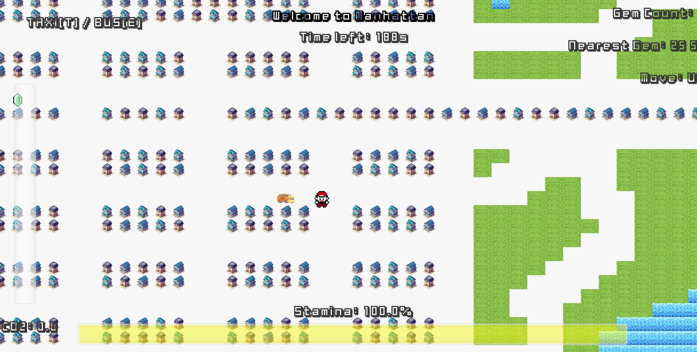
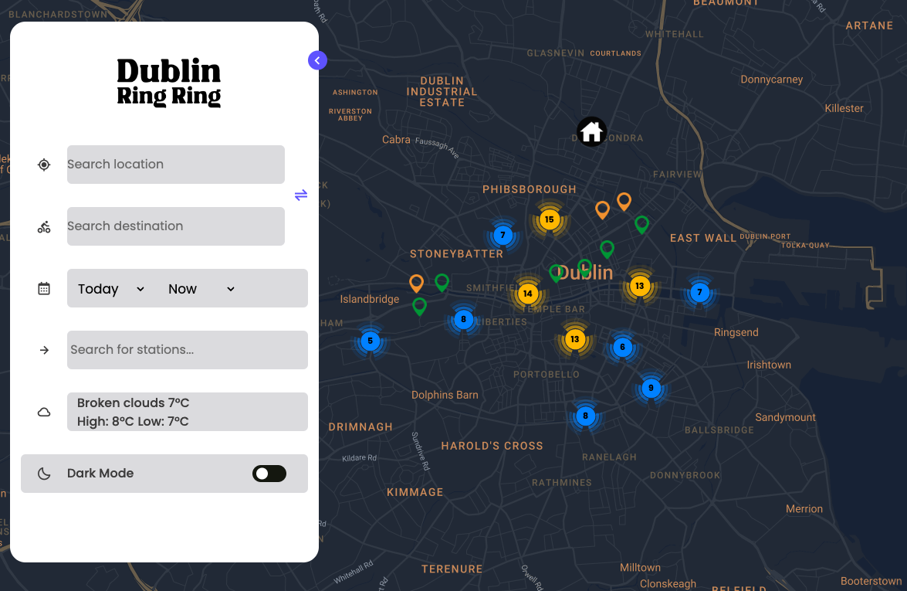

As a Psychology graduate turned Software Engineer, I am passionate about creating technology
that makes a meaningful impact on people's lives. My background in psychology gives me a
unique perspective on understanding human needs and behaviors, which I apply to develop
user-centric solutions. I believe in the power of technology to improve human well-being and
am committed to creating applications that address real-world challenges. When I encounter
inefficiencies or user pain points, I don't just pass them by - I see them as opportunities
to make things better. My goal is to bridge the gap between human psychology and technology,
creating solutions that are not only technically sound but also deeply empathetic to user
needs.
July 4, 2025 - July 7, 2025

Designed and developed a sophisticated web application that transforms English names into authentic Korean names using Google Gemini AI integration. Built with Next.js, React, and Tailwind CSS to deliver an intuitive user experience whilst implementing robust input validation and performance optimisations.
Engineered comprehensive client-side security measures including real-time input sanitisation, character filtering, and intelligent caching systems to ensure secure API interactions.
Focused extensively on cross-cultural accuracy by incorporating traditional Korean naming conventions, Hanja (Chinese character) meanings, and pronunciation features.
Implemented advanced client-side caching with localStorage, favourites management, and real-time input validation to ensure both security and seamless user interaction across diverse global audiences.
Next.js
React18
Tailwind
Google Gemini 1.5 Flash
Vercel
JavsScript

Architected and developed a backend API from the ground up, designed
to emulate the structure and robustness of an enterprise-level
service. I leveraged a high-performance stack, using Python and
FastAPI to build the core asynchronous framework, while integrating
the SQLAlchemy ORM for secure and efficient database interaction with
SQLite. To guarantee data integrity across the service, I implemented
strict, type-safe validation at the API boundary using Pydantic. The
project's roadmap is focused on introducing advanced security
patterns, including JWT-based authentication, and ensuring deployment
consistency with Docker
Python
FastAPI
SQLite
SQLAlchemy
Pydantic
Uvicorn
PostgreSQL
JWT
Passlib, Bcrypt
Docker

Designed and implemented a personal project simulating enterprise-scale systems using
Microservice Architecture and event-driven design. Utilised Java, MySQL (with advanced
indexing and query optimisation), Redis caching, and Kafka event streaming to efficiently
process and manage 12 million records. Explored distributed transactions, concurrency
control, and scalable system patterns to ensure high performance and reliability under heavy
load.
Java
Spring Boot
JUnit
Redis
Kafka
MySQL
Microservice Architecture
Event-Driven Design
Distributed Transactions
Concurrency Control
Jul 2024 - Jul 2024
Emotion Diary

The Emotion Diary project aims to assist users in recording their daily events and
reflections. It provides a service to help transform negative experiences of the day into
positive words and sentences. This app addresses the difficulties and inconveniences
associated with writing a diary by hand.
Web Application
React
Tailwind CSS
Vercel
Git
GitHub
Jul 2024 - Jul 2024
Todo_list

The Todo_list project allows users to easily create and manage to-do lists with simple CRUD
operations. All tasks are stored in localStorage, ensuring your data is safe even after
closing or refreshing the browser. Users can select different dates to organise their tasks,
making it easy to plan and track progress over multiple days. The intuitive interface is
designed for efficient task management, whether for personal goals, work, or daily routines.
React
Vercel
localStorage
CRUD
UI/UX
May 2024 - Jul 2024
PinBox!

Led the PinBox! project as my Master's capstone, developing an AI-driven travel planner.
Defined business requirements, created Figma wireframes, and managed the team with Daily
Scrum sessions. Self-learned JavaScript, React, and Tailwind CSS to support the frontend,
delivering an intuitive interface and ensuring timely project delivery.
React
AWS
C#
DOCKER
PostgreSQL
FIGMA
May 2024 - Jul 2024
WaybackHome

Developed a Java and JavaFX game promoting sustainable transport, advocating for an OOP
design with a Transport parent class to streamline CO2/stamina calculations for Bicycle and
Bus, reducing code duplication in a 5-person team. Delivered a scalable system under tight
deadlines, aligning with PlayStation's passion for innovative, interactive gaming
experiences, and documented design choices for team alignment.
Java
JavaFX
OOP
Game Design
Team Collaboration
January 2024 - April 2024
CycleHub

Served as Backend Developer and Production Manager for CycleHub, a Master's project to
promote cycling in Dublin. Built a robust backend with Python (Flask) and AWS, integrating
real-time bike and weather data into PostgreSQL. Collaborated with the Data team to deploy a
demand prediction model, and supported the frontend with modern JavaScript for a Google
Maps-inspired UI.
Python
JavaScript
Scikit-learn
AWS
MYSQL
FIGMA